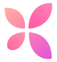
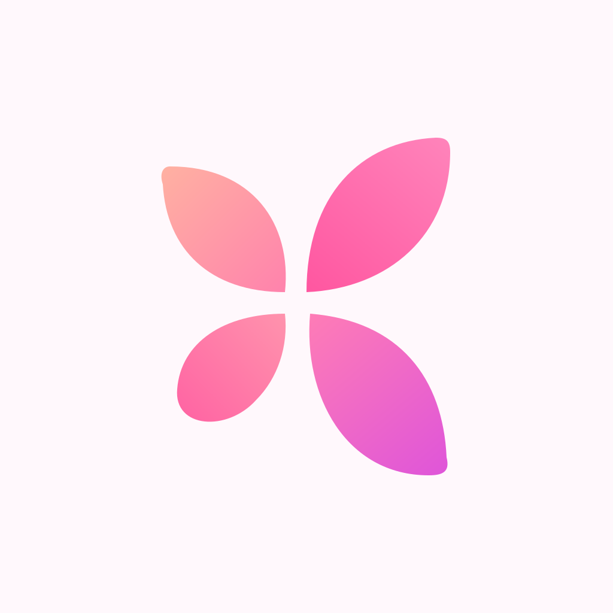
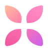
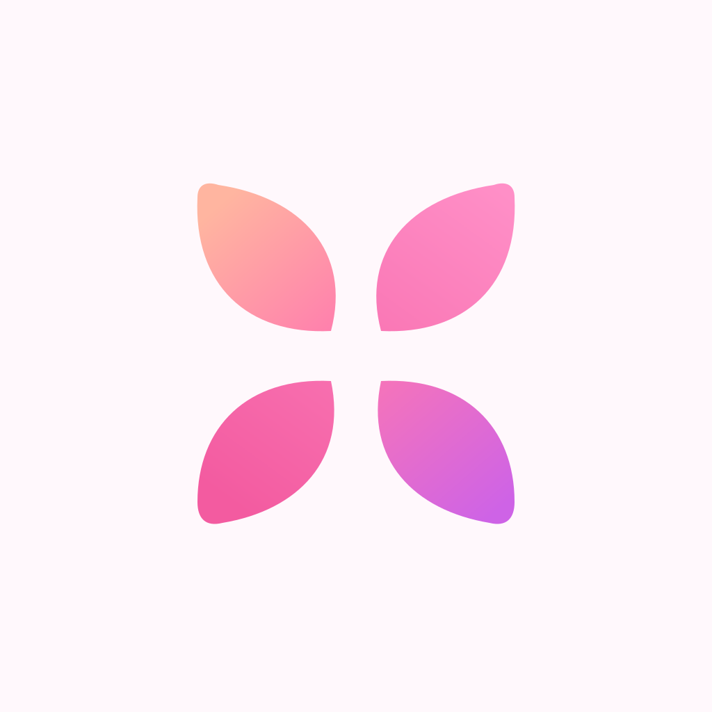

BloomBloom
ОСНОВНОЙ · ПО РЕФЕРЕНСУ
Bloom Petals
Асимметрия и четыре лепестка из верхнего логотипа. Этот знак сейчас используется на странице архитектуры.

Мягкие лепестки, тёплый градиент и пространство вокруг.

BloomАсимметрия и четыре лепестка из верхнего логотипа. Этот знак сейчас используется на странице архитектуры.


BloomБолее собранный и симметричный цветок. Небольшой просвет в центре помогает лепесткам читаться в маленьком размере.

SVG-знаки прозрачные. PNG-иконки имеют непрозрачный фон и квадратные углы; скругление в превью показано только для примера.